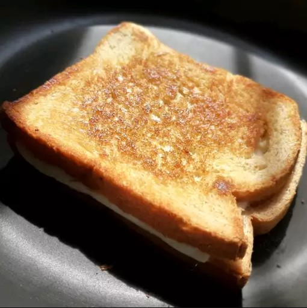

Grilled Cheese Sandwich

Learn how to make a grilled cheese sandwich in a nonstick pan with buttered
bread and American Cheddar for a classic hot sandwich.
Prep Time: 5 mins |
Cook Time: 10 mins |
Total Time: 15 mins
Ingredients
- 4 slices white bread
- 3 tablespoons butter, divided
- 2 slices Cheddar cheese
Directions
- Preheat a nonstick skillet over medium heat. Generously butter one side of a slice of bread. Place bread butter-side down in the hot skillet; add 1 slice of cheese. Butter a second slice of bread on one side and place butter-side up on top of cheese.
- Cook until lightly browned on one side; flip over and continue cooking until cheese is melted. Repeat with remaining 2 slices of bread, butter, and slice of cheese.
Nutrition Facts
Calories: 400 | Fat: 28g | Carbs:26g | Protein:11g
Reference
the original recipe can be found
here
all rights reserved to original authors.
Return to main page